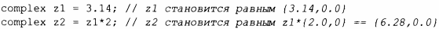
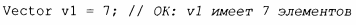
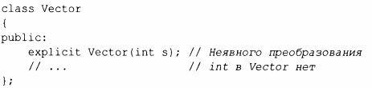
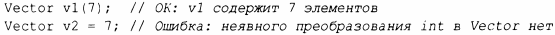

⇐5.1.1 Основные операции 5.1.3 Инициализаторы членов⇒
Конструктор, получающий единственный аргумент, определяет операцию преобразования из типа аргумента. Например, complex (§4.2.1) предоставляет конструктор от double:
Такое неявное преобразование иногда оказывается идеальным, но не всегда. Например, Vector (§4.2.2) предоставляет конструктор от int:
Такая запись обычно рассматривается как неудачная, и vector стандартной библиотеки не допускает такого "преобразования" int в vector.
Способ избежать этой проблемы заключается в том, чтобы разрешить только явное "преобразование", т.е. мы можем определить конструктор следующим образом:
Это дает нам
Когда дело доходит до преобразований, на Vector похоже больше типов, чем на complex, поэтому, если нет веской причины поступать иначе, используйте explicit для конструкторов, которые принимают один аргумент.